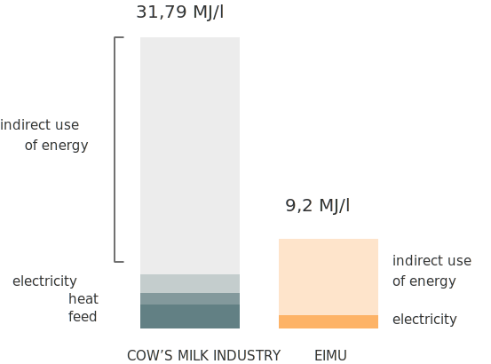
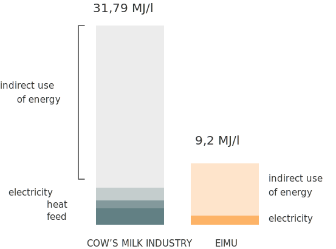

Mis on meie missioon?
Toidutootmise keskkonnamõju on tänapäeval suur väljakutse. Toidusüsteemid on muutunud nii keerukaks, et ühte probleemi on raske lahendada, ilma et see muudaks hullemaks teist probleemi. Kõik on tugevalt ühendatud. Selline olukord vähendab põllumeeste sissetulekuid ja põhjustab väiketalumajapidamistele raskusi.
Meie tegevus on keskendunud ainult kohalikele keskkonnasõbralikele ja säästvatele taludele. Meie turunduse eesmärk on näidata inimestele vaatenurka, mis rõhutab toitainetele ligipääsu ning tervise vastastikust mõju ning analüüsib alatoitumise ja rasvumise mõju keskkonnale.
Eestis kasvatatud tooraine
Toetame kohalikku põllumajandust ja põllumehi ning aitame kaasa keskkonnasõbralikule põllumajandusele.
Meie eesmärk on näidata, kuidas ressursitõhusat looduslikku toodet valmistatakse. Osutades eriti keskkonnale keskendunud põllumeeste ja tehnoloogide raskele ning intensiivnesele tööle. Odavat toorainet kokku segades oleks lihtne luua uus tooteid, kuid me tahame viia inimesed tagasi oma juurte juurde.
Tehnoloogia on kasutada HPP-masinaid, orgaanilisi tooraineid, taaskasutada jääke muude tervislike toodete valmistamiseks, nagu suhkruvabad vegan küpsised, müsli, kääritatud jogurt jne. Teeme tihedat koostööd Tallinna Tehnikaülikooli toidutehnoloogidega, et luua veganjoogi jaoks uus tehnoloogia.


Kohalikud tootjad
Toetame kohalikku põllumajandust ja põllumehi ning keskendume keskkonnasõbralike talude valimisele.
Meil on partneritena usaldusväärne kohalike põllumeeste ring, Eesti Maheproteiini Ühistu ja Tammejuure talu. Tammejuure Mahetalu on tuntuim kanepitalu Eestis. Nad on kanepit kasvatanud 10 aastat ja neil on põllumajanduskogemus üle 30 aasta ning nad harivad maad 600 hektaril ja on mahepõllumajandusliku sertifikaadiga alates 2001. aastast.
Kogu parterite toodang põhineb bioenergial. Toorainet kuivatatakse bioküttega, milles kasutatakse kraavipõõsastest pärit hakkpuitu. Teraviljaterminali ja toiduainetööstuse tootmiseks kasutatakse päikeseenergiat tootmisrajatise kõrval asuvatest päikesepaneelidest.
Kohalik tootmine
Esimene taimne jook, mida toodetakse Eestis ja 100% kohalik.
Järgmise kolme aasta jooksul soovime ühekordse investeeringu vajaminevasse tehnoloogiasse (masinad, ensüümid ja rendipind). Väljakutse on leida kiire ja jätkusuutlik protsess taimsete jookide valmistamiseks, nii et kauplustes olev toode oleks kõigile taskukohane.
Praegu on meie parteriteks Maldivar ja Värska, kus jahvatame teravilja ja seemneid ning toodame jooke.

 

Keskkonnasäästlikkus
Me hoolime oma planeedist.
Me sihime päris probleemidele, mida suured piimatööstused loovad. Need on kahjulikud nii loomadele (loomade karjatamine on vastutav 91% Amazoni vihmametsade raiest), sest vee kasutuse ja sööda kasvatamise keskkonnanumbrid on väga suured.
Kui me jõuaks 20 000 inimeseni oma esimesel aasta, me säästaks 4 miljonit kg CO2 väljaheidet, 1.3 miljonit kWh energiat ja 1.2 miljardit liitrit vett, mida lehmapiimatööstus hetkel tarbib.
Me oleme eemaldanud kõik ebavajalikud transpordikulud, mida konkurendid ignoreerinud on. Eestis on piimatööstuse fossiilne energiakasutus 5.1MJ/kg piima kohta, mis on 1.41 kWh/l. Kuid see on vaid otsene energiakasutus, mis moodustab 20% kogu energiakasutusest. Keskmiselt kulutatakse 31.73 MJ 1kg piima tootmiseks (8.8 kWh/l), millest siis 20% on otsene ja 80% kaudne energia kasutus. Eimu nõuab fossiilset energiat 1.84 MJ/l ehk 0.55 kWh/l otsest energiat. Maksimaalselt kulub 9.2 MJ/l kaerapiima tootmiseks, kui kaudsed kulud ka sisse tuua.
- 1. (Eesti Maaülikool 2012 ) “Energia põllumajanduses”
- 2. .Journal of Dairy Science, Volume 96, Issue 10, October 2013, Pages 6489-6498 “Energy demand on dairy farms in Ireland” J.Upton , J.Humphreys ,* P. W. G.Groot Koerkamp ,† P. French ,* P. Dillon ,* and I. J. M. De Boer ‡
- 3. Swedish Institute for Food and Biotechnology, LCA report, 2013, Britta Florén, SIK
Tervislikumad valikud
Oleme seadnud sinu tervise esikohale!
Oleme valmis muutma põllumajanduse ja toidutootmise mainet. Soovime, et oleks rohkem innovaatilisi noori, kes mõtleksid vähem kasumist ja rohkem heast, mida nad saavad sellega kaasa tuua. Ja mida rohkem head suudame teha, seda tervemad saame koos olla!

PÕHJUSED, MIS JUUA TAIMSET JOOKI:
-
Laktoositalumatus
-
Piimaallergia
-
Ei meeldi piim, kuid meeldib kreemjas maitse või vajate toiduvalmistamiseks piimasarnast toodet
-
Vegan dieet või elustiil
-
Mured põletike pärast
-
Crohni tõbi, koliit või põletikulise soole sündroom
-
Mure antibiootikumide, pestitsiidide või hormoonide pärast
-
Eetilised vaated
Lugematu hulk kasulikke omadusi:

KAERAJOOK
B-vitamiinid:
- - tiamiin
- - folaat
Mineraalid
- - magneesium
- - kaalium
- - mangaan
- - fosfor
- - tsink
Suur kiudainesisaldus
Kaerajoogis on kaks korda rohkem kiudaineid kui lehmapiimas, mistõttu on see suurepärane valik kiudainete lisamiseks dieedile, et see parandaks soolestiku ja seedetrakti funktsioone. Täpsemalt, beetaglükaan, lahustuv kiud, tugevdab immuunsust. Regulaarne tarbimine võib nakkust ära hoida ja parandab keha võimet ennast loomulikult tervendada.
Vitamiinirikas
Kaerajook sisaldab B-vitamiine nagu tiamiin ja folaat, toetades süsivesikute (tiamiini) lagundamist energia saamiseks ja punaste vereliblede (folaatide) normaalseks toimimiseks.
Asendab küllastunud rasvad küllastumata rasvade vastu
Puuduvad küllastunud rasvad ja kokku 2,5 g rasva portsjoni kohta. See on super vegan toode. Tavaline täispiim sisaldab umbes 8 g rasva ja 5 g küllastunud rasva. Kuna igas portsjonis on minimaalselt rasva, on kaerajook väga madala kalorsusega ja sobib ideaalselt neile, kes jälgivad oma toitumist ning peavad hoidma seda tasakaalus treeningute jaoks.
Kolesteroolivaba
Olles piimavaba toode, kaerajook ei sisalda kolesterooli. Regulaarne tarbimine võib isegi vähendada halva kolesterooli (LDL) sisaldust veres. Liigne kolesterool soodustab LDL-i või madala tihedusega lipoproteiinide kogunemist arteritesse, mis viib südame-veresoonkonna haiguste eelkäija ateroskleroosini. Nii vähendate iga tavalise piima portsjoni kohta, mille asendate kaerapiimaga, oma päevast kolesteroolitarbimist 24 mg võrra.
Reguleerib veresuhkru taset
Beetaglükaan ehk lahustuv kiud, aeglustab süsivesikute imendumist soolestikus, pakkudes aeglasemat ja stabiilsemat suhkruvarustust vereringesse. Suurepärane ja väga tervislik valik II tüüpi diabeedihaigetele, kes soovivad oma veresuhkrut reguleerida.
Luid tugevdavad mineraalid
Mineraalid kaalium, magneesium ja tsink kuuluvad selle supertaimse joogi koostisesse. Kõik kolm mineraali on mikroelementide jaoks olulised tervete luude tugevdamiseks ja moodustamiseks.
Paranenud südame tervis
See teraviljataoline seeme aitab vähendada põletikku ja vähendada LDL ehk “halva kolesterooli” taset, mis on olulised südame tervise säilitamiseks. Peamine toitaine, mis neid kardiovaskulaarseid eeliseid pakub, on rutiin, fütotoitainete ja antioksüdantide tüüp, mis aitab stabiliseerida vererõhku ja vähendada kolesterooli.
Langetab veresuhkrut
Paljude täisteratoodetega võrreldes on selle pseudokereaali glükeemiline indeks väga madal - see tähendab, et süsivesikute sisaldus imendub vereringesse aeglaselt, pakkudes teie kehale ühtlast energiavoogu. Veresuhkru järsu suurenemise ärahoidmisega aitab see toitev seeme diabeedi juhtimisel ja võib parandada insuliiniresistentsust.
Gluteeni- ja allergiavaba
Kuigi seda seemet saab kasutada samamoodi nagu täisteratooteid nagu nisu ja oder, on see seeme gluteenivaba, mistõttu on see suurepärane valik tsöliaakia või teravilja tundlikkusega inimestele. Selle seemne vahetamine tüüpiliste gluteeni sisaldavate teradega toodete vast võib olla kasulik ka inimestele, kes kannatavad seedehäirete, nagu lekkiva soole sündroomi all.
Kiudainerikas
Iga ühe tassi keedetud kruupide kohta annab see toit 6 grammi kiudaineid. Kiudained aitavad toidu sujuvalt läbi seedetrakti ja võib aidata säilitada “täiskõhu” tunnet kauem - see võib olla kasulik, kui proovite kaalust alla võtta.
Võib kaitseda vähi vastu
See pseudokereal sisaldab antioksüdante ja fenoolühendeid, mis võivad aidata võidelda teatud tüüpi vähktõvega. Mõned selles toidus leiduvad antioksüdandid hõlmavad flavonoide, nagu oligomeersed proantotsüanidiinid, mis kaitsevad teie rakke vabade radikaalide kahjustuste eest ja hoiavad ära ohtliku põletiku, mis võib soodustada vähi levikut.
Taimse valgu allikas
See toit pole mitte ainult vitamiinide ja mineraalide rikas, vaid ka suurepärane seeditava taimse valgu allikas. Iga 100 grammise portsjoni kohta sisaldab see kasvu ja lihaste sünteesi toetamiseks koguni 14 grammi valku ja 12 erinevat aminohapet. Valgusisaldus ei ole päris nii kõrge kui teatud ubades ja kaunviljades, kuid see on suurem kui enamikus täisteratoodetes.

TATRAJOOK
Vitamiinid:
- - B1
- - B2
- - B3
- - B6
- - B9
- - E
Mineraalid:
- - magneesium
- - mangaan
- - fosfor
- - raud
- - vask

KANEPISEEMNE JOOK
- - rohkem valku kui veiselihas
- - rohkem kaltsiumi kui piimas
- - vähem küllastunud rasvu kui oliiviõlis
Vitamiinid
- - A
- - D
- - B12
Mineraalid
- - magneesium
- - raud
- - tsink
- - kaltsium
- - fosfor
Tugevdab immuunsüsteemi
Kanepiseemned toetavad Omega-3 ja -6 rasvu ideaalses vahekorras 1: 3, mis soodustab aju ja südame tervist ning on kehas põletikuvastane.
Võib vähendada südamehaiguste riski
The seeds contain high amounts of the amino acid arginine, which produces nitric oxide in your body. Nitric oxide is a gas molecule that makes your blood vessels dilate and relax, leading to lowered blood pressure and a reduced risk of heart disease.
Võib aidata nahahäirete puhul
Uuringud on näidanud, et kanepiseemneõli andmine ekseemiga inimestele võib parandada asendamatute rasvhapete taset veres. Õli võib leevendada ka naha kuivust, parandada sügelust ja vähendada vajadust naharavimite järele.
Hea taimse proteiini allikas
Ligikaudu 25% kanepiseemnetes sisalduvatest kaloritest pärineb valgust, mis on suhteliselt kõrge. Tegelikult annavad kanepiseemned massi järgi sarnaseid koguseid valku kui veiseliha ja lambaliha - 30 grammi kanepiseemneid või 2–3 supilusikatäit annab umbes 11 grammi valku. Neid peetakse täielikuks valguallikaks, mis tähendab, et nad annavad kõik asendamatud aminohapped. Teie keha ei saa olulisi aminohappeid toota ja peab neid oma dieedist hankima.
Hea seedimisele
Kiudained on teie dieedi oluline osa ja seotud parema seedetrakti tervisega. Lahustuv kiud moodustab teie soolestikus geelitaolise aine. See on väärtuslik toitaineallikas kasulikele seedebakteritele ning võib samuti vähendada veresuhkru kasvu ja reguleerida kolesteroolitaset. Lahustumatud kiud lisavad teie väljaheitele lahtiselt ja võivad aidata toitu ja jäätmeid teie soolestikus. Seda on seostatud ka diabeedi riski vähenemisega